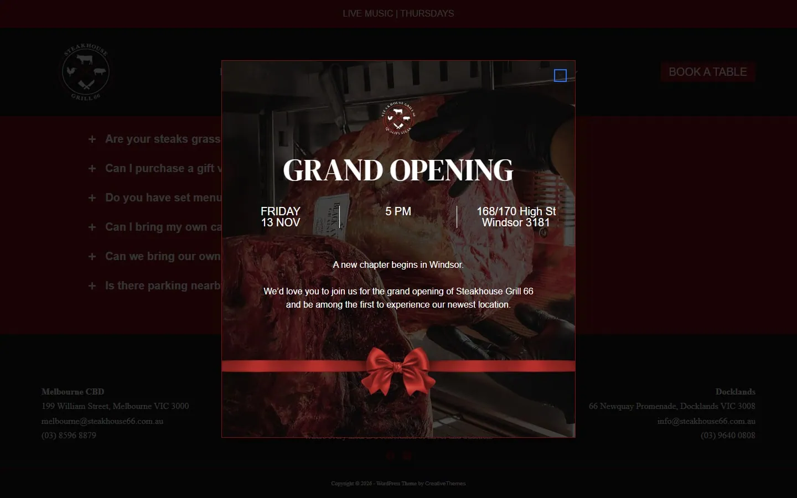
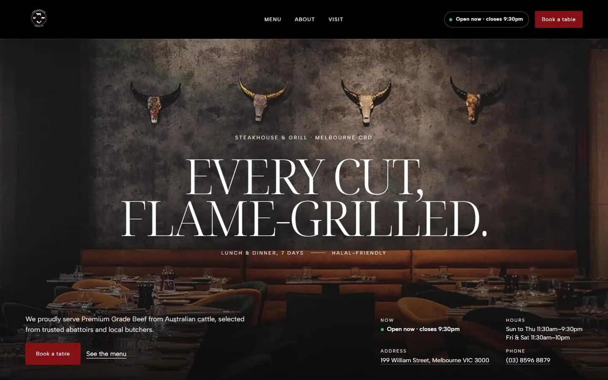
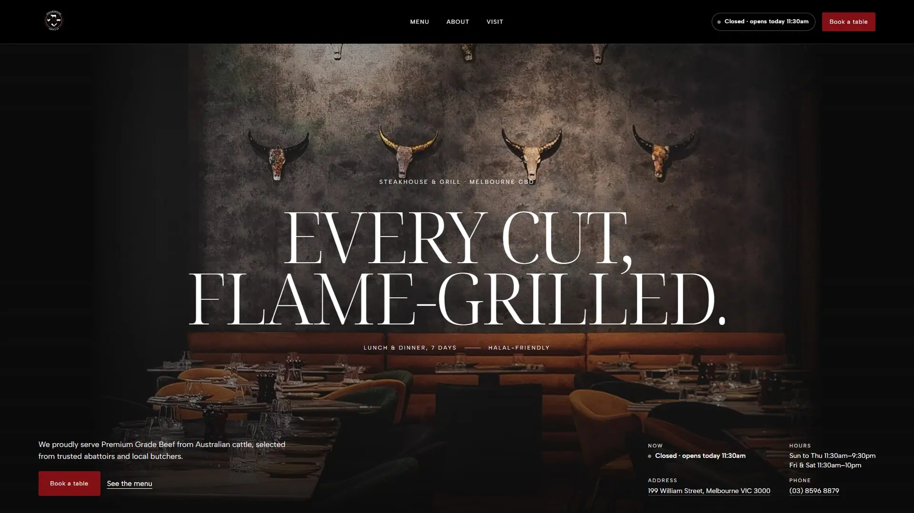
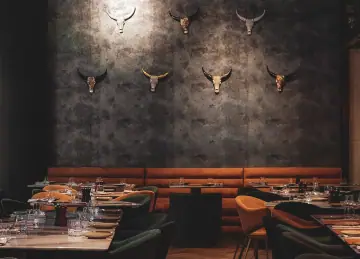
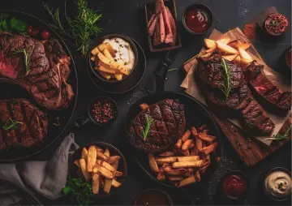
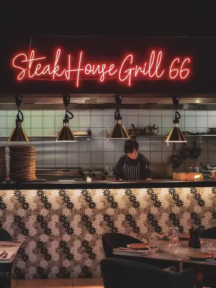
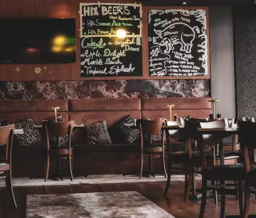
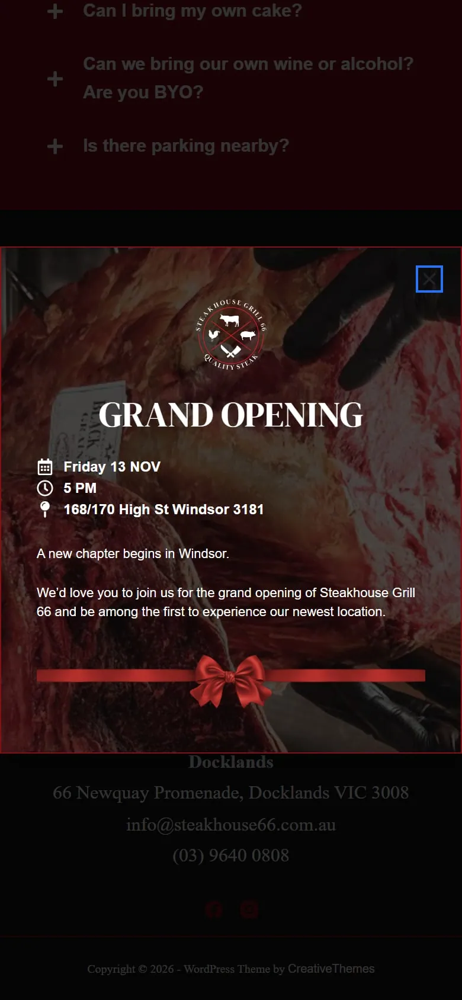
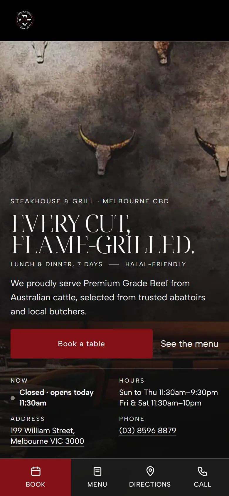

Steakhouse Grill 66



Ana fotoğraf neden bu kare
04: yemek salonu, boğa kafatası duvarı ve taba deri banket. Sitedeki en güçlü kendi çekimi (telefon çekimi, dosya adı 20250510_130728). Gerçek boyutu 1536×1106 px; 1920 px altında olduğu için büyütülmedi: çerçeve düzeni, fotoğraf kendi genişliğinde ortada durur, kenarları markanın koyu zeminine erir. Daha geniş tek aday 01 (2245 px biftek tabakları) bir Canva tasarım dosyası (dosya adı Untitled design 42), işletmenin kendi çekimi olduğu belli değil; kahramana alınmadı, menü bölümünde kullanıldı.
Sayfada sunulan en büyük sürüm: 1536×1106 px. Kural: tam ekran için en az 1920 px, büyütme yok; çözünürlük, keskinlik, pozlama ve konu puanlanır, ilk adaylar gözle kontrol edilir.






- Referans
- amritpalace.com (mekân dili)Ortalı, iki satır büyük harf ince serif başlık; başlığın altında iki küçük etiket; sol altta kısa paragraf ve eylem, sağ altta bilgi kutusu; özellik şeridi (yatay akan); menü için yarım fotoğraf + marka renginde panel; çok sütunlu alt bilgi ve dev yazı markası. Kod, çizim, fotoğraf ve metin alınmadı; içerik işletmenin kendisinden.
- Fontlar
- Başlık: Noto Serif Display 300Referanstaki TT Ramillas Variable 300 (ticari, TypeType); en yakın ücretsiz eş (OFL-1.1)Metin: Albert SansReferanstaki Satoshi 500 (Fontshare lisansı); en yakın ücretsiz eş (OFL-1.1)
- Slogan
- “Every cut, flame-grilled.”elle (yazıldı; dayanak kendi cümleleri: "every possible steak cut" (ana sayfa) ve "Taste the perfection of flame-grilled dishes" (sitenin alt bilgisi))Sitedeki büyük başlık "Steakhouses in Melbourne" bir arama başlığı (tür + şehir). Amritpalace dilinde başlık iki kısa satır büyük harftir; seçilen cümle işletmenin iki kendi ifadesini birleştirir: her kesim ve alevde ızgara.
- Logo
- Kendi dosyası, bayt bayt aynı (512×512 px, sha256 4b545bab0443…); renk, kırpma, filtre ve oran değişmedi.Logo fotoğraf üstünde okunmadığı için üst çubuk baştan logonun kendi zemininde.
- Renk
- #831014 vurgu #1b1b1b zemin #ffffff yazı #141414 koyuSitenin kendi renkleri (koyu palet korundu); tüm yazı çiftleri WCAG kontrastını geçer.
- Menü
- 8 kalem, kendi adları ve fiyatlarıylaKaynak: https://steakhouse66.com.au/wp-content/uploads/2026/05/MENU2026-CBD.pdf (sayfa 2-4; ad ve fiyat konumla eşlendi)
- Saat
- Kendi saatleri ve "şimdi açık" bilgisi ilk ekrandaKaynak: https://steakhouse66.com.au/locations_melbourne_cbd/ (OPERATING HOURS, Lunch & Dinner)
- Kapı
- hazır (1440, 1920 ve 390 px)Taşma 0, bozuk görsel 0, konsol hatası 0, yüklenmeyen font 0; ilk ekranda slogan + ana eylem + saat/adres/telefon/şimdi açık: tam; ilk ekran yazı kontrastı 1440: yeterli, 1920: yeterli, 390: yeterli.